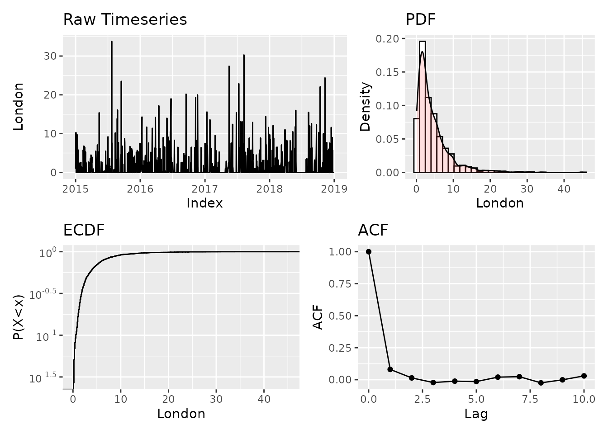
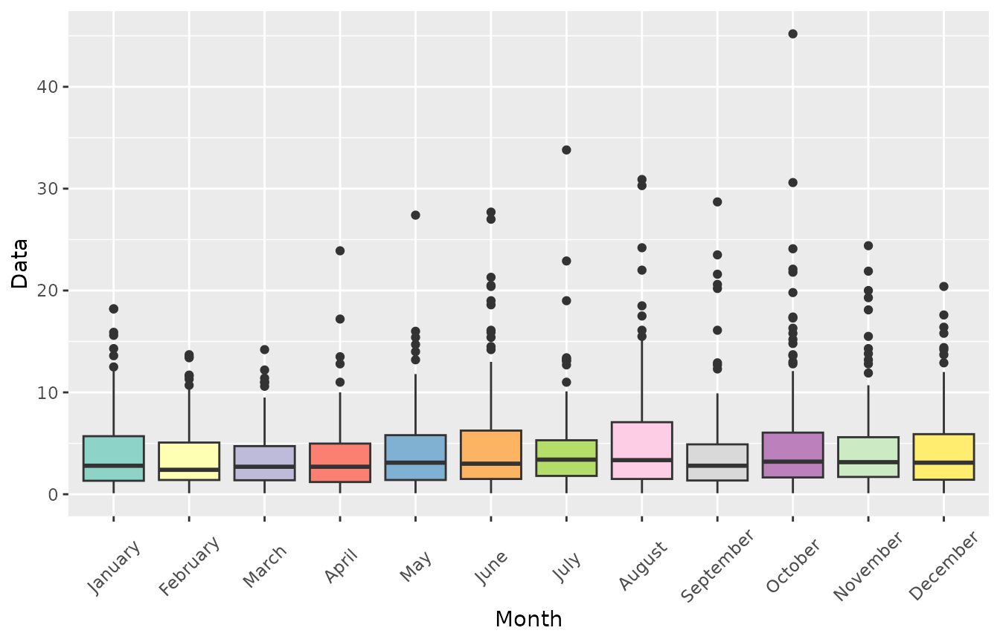
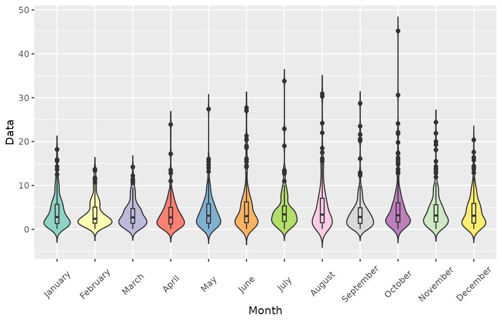
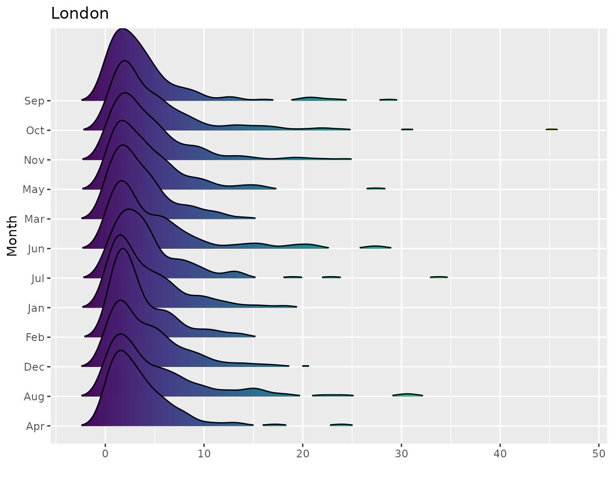
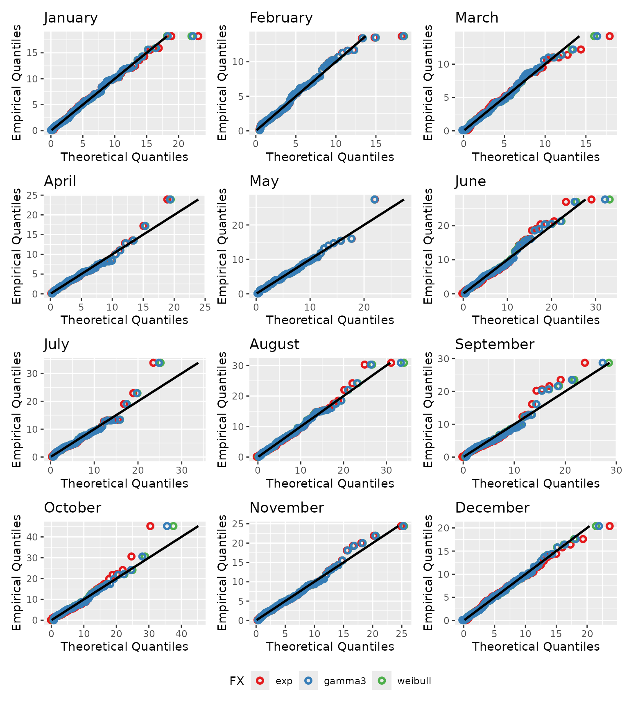
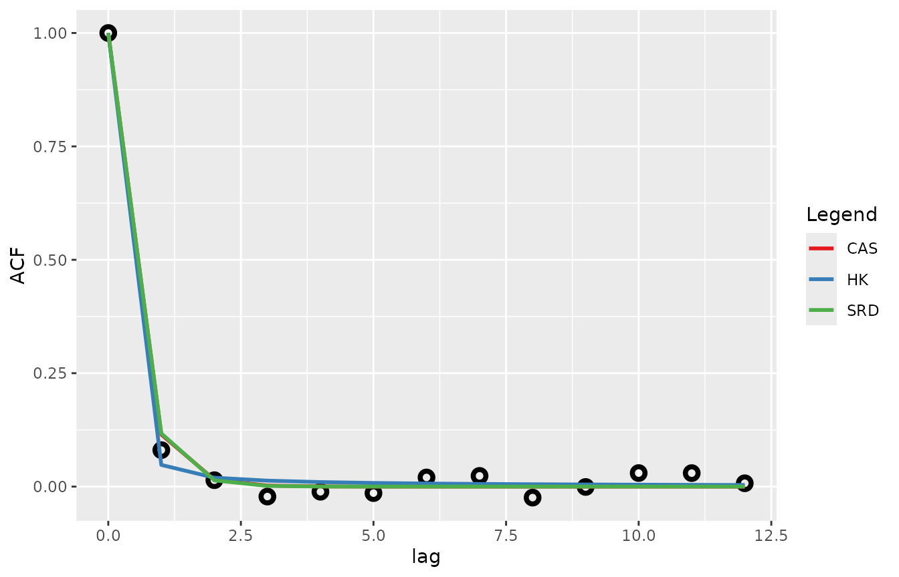
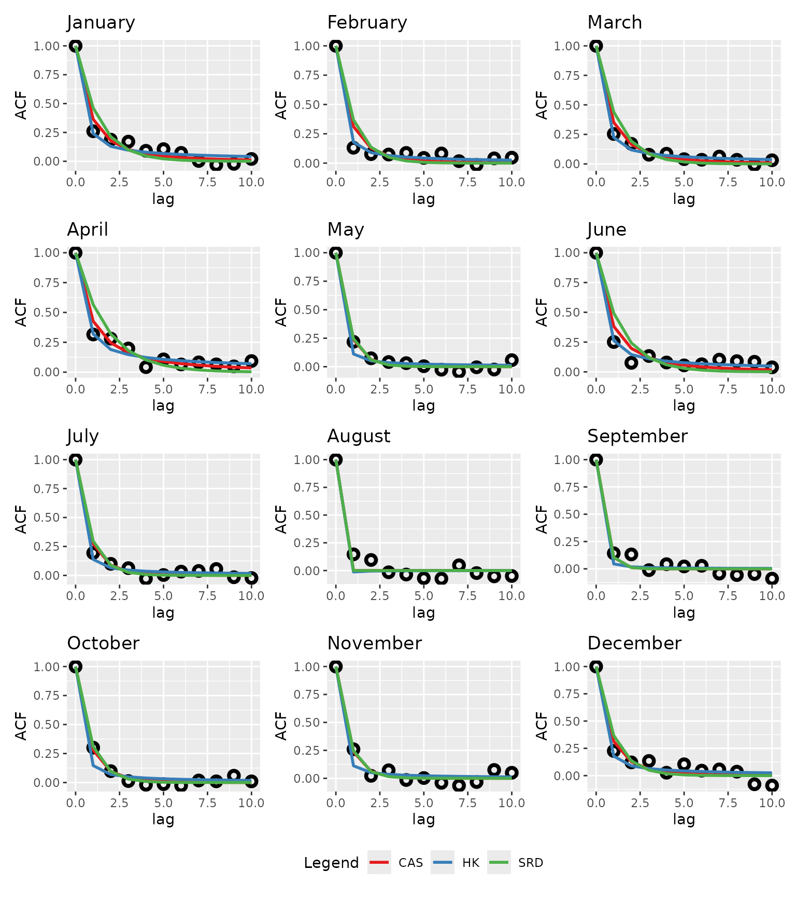
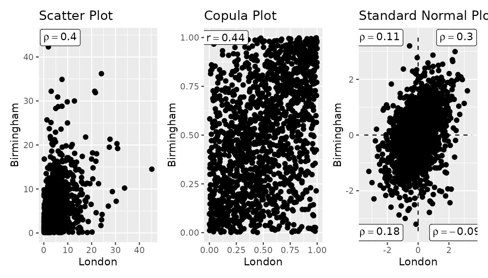

1. Point processes
Many applications require the analysis of point-based timeseries, such as a rain gauge, a station record, or a series extracted from a gridded product. anyFit applies the same statistical machinery to point data as it does to grids. Crucially, hydroclimatic point series are usually cyclo-stationary: both their marginal distribution and their autocorrelation structure change with the season. This article demonstrates the point-analysis toolkit on a single location.
We extract the London grid cell from the bundled E-OBS daily rainfall
file with nc2xts_nn(), which returns the nearest cell to
the supplied coordinates.
f <- system.file("extdata", "rr_ens_mean_0.25deg_reg_2011-2022_v27.0e.nc",
package = "anyFit")
london <- nc2xts_nn(f, varname = "rr", coords = data.frame(x = -0.1278, y = 51.5074))
colnames(london) <- "London"2. A first look with basic_stats()
basic_stats() streamlines the essential facets of a
series into one call: the raw series, the empirical PDF, the empirical
CDF, and the autocorrelation function (ACF), alongside a table of
summary statistics. We restrict the plot to a few years for legibility,
excluding dry days.
bstats <- basic_stats(london, pstart = "2015", pend = "2018", plot = TRUE,
show_table = FALSE, show_label = FALSE, ignore_zeros = TRUE)
bstats$plot
3. Seasonality at a glance
Grouping the daily values by calendar month reveals the seasonal cycle. anyFit provides ggplot wrappers for month-grouped boxplots, violins and density ridges.
monthly_boxplots(london, palette = "Set3", ignore_zeros = TRUE)
monthly_violins(london, palette = "Set3", ignore_zeros = TRUE)
ridge_plots(london, palette = "Set3", ignore_zeros = TRUE)$plot_monthly
#> $London
4. Monthly (cyclo-stationary) distribution fitting
Rather than fit one distribution to the whole series,
fitlm_monthly() fits a set of candidates separately
for each calendar month, capturing how the marginal
distribution shifts through the year. The returned monthly Q–Q plot
shows how well each month’s fit matches the data, where a good fit falls
on the 1:1 line.
monthly_fits <- fitlm_monthly(london, candidates = list("exp", "weibull", "gamma3"),
ignore_zeros = TRUE)
monthly_fits$monthly_QQplot
5. Autocorrelation structure
Cyclo-stationarity is also present in the temporal dependence. anyFit
fits three theoretical autocorrelation structures to the sample ACF,
namely the Cauchy-type (CAS), the Hurst–Kolmogorov long-range structure
(HK), and the exponential short-range dependence structure (SRD), which
encode different assumptions about how quickly memory decays.
fit_ACF() performs this fit globally:
acfs <- fit_ACF(london, lag_max = 12, ignore_zeros = TRUE)
acfs$ACF_plot
fit_ACF_monthly() repeats the procedure per calendar
month, revealing seasonal changes in persistence.
monthly_acfs <- fit_ACF_monthly(london, lag = 10)
monthly_acfs$ACF_monthly_plot
6. Dependence between locations
Dependence between two series is often of interest, whether between
stations or between a site and its neighbour. Moving beyond the plain
correlation coefficient, correl_plots() shows the joint
behaviour in three spaces: the original space (scatter), the uniform
space (copula, which isolates the dependence structure from the
marginals), and the standard-normal space.
neighbour <- nc2xts_nn(f, varname = "rr", coords = data.frame(x = -1.9, y = 52.5))
colnames(neighbour) <- "Birmingham"
correls <- correl_plots(london, neighbour, check_common = TRUE, ignore_zeros = TRUE)
correls$combined
7. From analysis to stochastic simulation
The monthly marginal fits and the month-to-month statistics are
exactly the inputs required by the Stochastic Periodic ARTA (SPARTA)
model in the anySim package, enabling simulation of a
cyclo-stationary monthly process. The block runs only if
anySim is installed.
if (requireNamespace("anySim", quietly = TRUE)) {
smonthly <- aggregate_xts(london, periods = "months",
FUN = "sum")$list_months$aggregated
m_fits <- fitlm_monthly(smonthly, candidates = list("gamma3"), ignore_zeros = TRUE)
m_sts <- monthly_stats(london, aggregated = TRUE, FUN = "sum")
NumOfSeasons <- 12
rtarget <- m_sts$lag1$Value
rtarget[is.na(rtarget)] <- 0.1
FXs <- rep("qzi", NumOfSeasons)
PFXs <- vector("list", NumOfSeasons)
for (i in seq_len(NumOfSeasons)) {
PFXs[[i]] <- c(p0 = m_sts$agg_stats["Pdr", i],
Distr = match.fun("qgamma3"),
setNames(m_fits$params_monthly$gamma3[[i]],
rownames(m_fits$params_monthly$gamma3[i])))
}
SPARTApar <- anySim::EstSPARTA(s2srtarget = rtarget, dist = FXs, params = PFXs,
NatafIntMethod = "GH", NoEval = 9,
polydeg = 8, nodes = 11)
simS <- anySim::SimSPARTA(SPARTApar = SPARTApar, steps = 200)
str(simS$X)
}
#> num [1:200, 1:12] 78.3 95.2 91.3 76.8 37.4 ...
#> - attr(*, "dimnames")=List of 2
#> ..$ : NULL
#> ..$ : chr [1:12] "Season_1" "Season_2" "Season_3" "Season_4" ...8. See also
-
vignette("distribution-fitting"): the L-moment fitting engine and goodness-of-fit diagnostics in depth. -
vignette("gridded-workflow"): the same seasonal ideas applied across a grid withmonthly_stats_nc()andfitlm_monthly_nc().